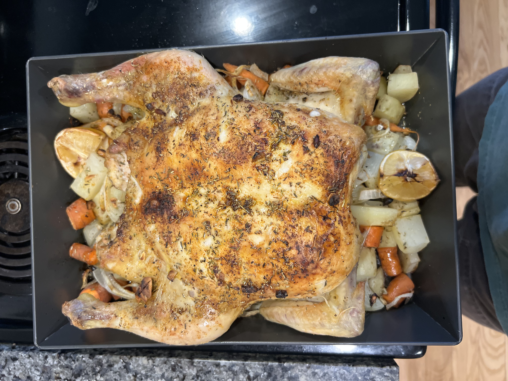

Barbarian's Roast

Chicken and root vegetables, what more could you possibly need. What this meal lacks in flavor it makes up for it in ease and perceived nutrition. This is what I imagine everyone ate in the medieval ages.
Ingredients
Steps
- Preheat the oven to 350
- Prep your vegetables, the more chicken you are cooking, the large you can keep your veggies. Generally I like smaller cubes of carrots and potatoes after all it is hard to over cook.
- Whether you are using a whole chicken or just chicken thighs, it doesn't make a difference, season vigorously.
I toss chicken thighs in rosemary, paprika, chili powder, salt, pepper, garlic salt, olive oil etc.
- Toss your veggies in olive oil and a spice mix of your choice.
- Dump all of your veggies in a pan, then place the chicken on top, even though there is oil on everything,
we want to keep the chicken resting on the veggies, ensure they are able to cook in the chicken.
- Roast for approx. 20-30 minutes, this receipe does not specify chicken volume so use your noggin' and most importantly, your thermometer!
- Everything is no cooked well, carve the chicken or just dump it all onto a plate, grab a gourd of some liquid and enjoy.